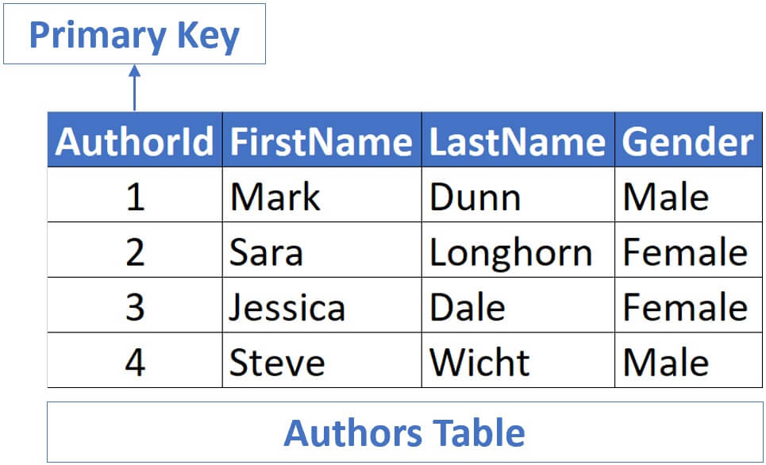
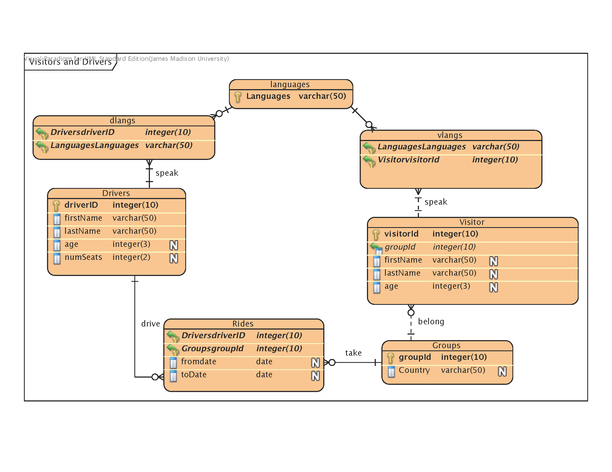

PrimaryKey
PrimaryKey adalah kolom atau kelompok kolom yang unik mengidentifikasi setiap baris dalam tabel. PrimaryKey
digunakan untuk memastikan bahwa tidak ada duplikat data dalam tabel dan memungkinkan pengguna untuk mengakses
data dengan cepat dan mudah. Dalam ERD, PrimaryKey direpresentasikan oleh simbol kunci utama (key symbol) pada
atribut yang dipilih sebagai PrimaryKey.

Contoh :
PrimaryKey digunakan untuk memastikan bahwa tidak ada duplikat data dalam tabel dan
memungkinkan pengguna untuk mengakses data dengan cepat dan mudah.
Dalam gambar tersebut, PrimaryKey direpresentasikan oleh simbol kunci utama (key symbol) pada atribut yang
dipilih sebagai PrimaryKey.
Tabel tersebut memiliki empat kolom: AuthorId, FirstName, LastName, dan
Gender. Setiap baris dalam tabel memiliki nilai yang unik untuk kolom AuthorId. Tabel tersebut diberi judul
“Authors Table”.
ForeignKey
ForeignKey adalah kolom yang mengacu pada PrimaryKey di tabel lain. ForeignKey digunakan untuk membangun relasi
antara tabel dalam basis data relasional. Dalam ERD, ForeignKey direpresentasikan oleh simbol kunci asing
(foreign key symbol) pada atribut yang merupakan ForeignKey.
Perhatikan gambar di bawah!!

Contoh :
Tabel tersebut memiliki empat kolom: AuthorId, FirstName, LastName, dan Gender. Setiap baris
dalam tabel memiliki nilai yang unik untuk kolom AuthorId. Tabel tersebut diberi judul “Authors Table”.
ForeignKey memungkinkan pengguna untuk mengakses data dari tabel lain dan memastikan bahwa data yang diambil
dari tabel lain sesuai dengan data dalam tabel yang sedang digunakan.
CandidatKey
Candidate Key adalah kolom atau kelompok kolom yang dapat digunakan sebagai PrimaryKey. Mereka memiliki sifat
unik, tetapi Anda dapat memilih salah satunya sebagai PrimaryKey.

Contoh :
Tabel tersebut memiliki tiga kolom: “KD SUPP”, “NAMA SUPP”, dan “ALAMAT”. Setiap baris dalam
tabel memiliki nilai yang unik untuk kolom “KD SUPP”.
Dalam ERD, Candidate Key direpresentasikan oleh simbol kunci kandidat (candidate key symbol) pada
atribut yang dipilih sebagai Candidate Key.